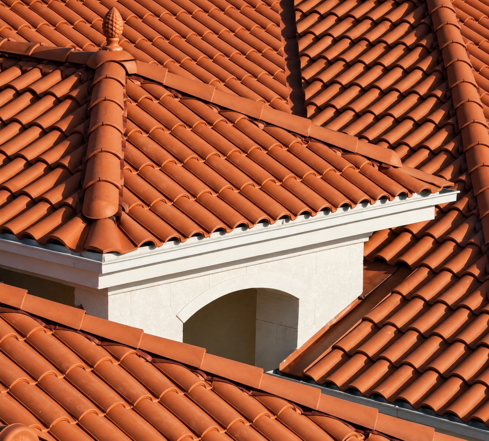

Teja Romana
Un diseño inspirado en cubiertas mediterráneas, con un perfil equilibrado que combina carácter visual y sencillez.

Características del modelo
La Romana busca un equilibrio entre presencia y sobriedad. Su geometría permite una apariencia más lineal y prolija, ideal para proyectos de estética contemporánea con materiales tradicionales.
PerfilLínea marcada
MaterialCerámica cocida
AcabadoTerracota natural
UsoViviendas y locales
Asesoramiento
Las tejas cerámicas se comercializan en pallets de 750 unidades. El precio promedio es de USD 1.450 para las romanas. Las cantidades, pendientes y sistema de colocación deben definirse según el proyecto y la estructura existente. Las cantidades, pendientes y sistema de colocación deben definirse según el proyecto y la estructura existente.
En Tejones contamos con una amplia variedad de diseños de tejas cerámicas para adaptarnos a diferentes estilos arquitectónicos. Desde modelos clásicos hasta opciones modernas, cada diseño ofrece la misma calidad, resistencia y durabilidad, permitiendo que nuestros clientes encuentren la alternativa ideal para cada proyecto.